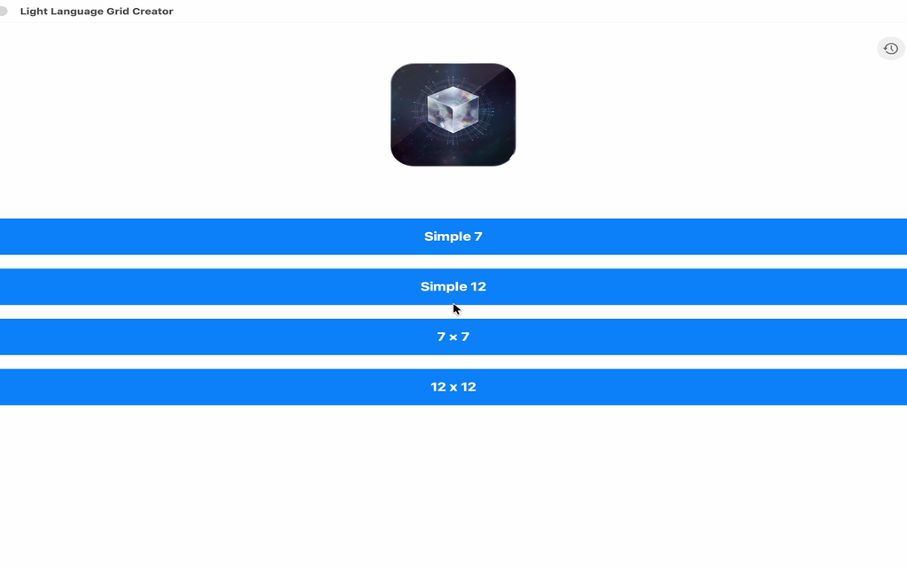
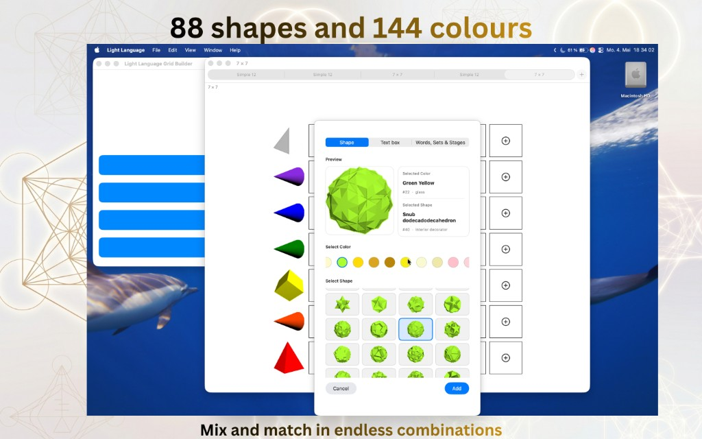

Cerchi un software per il light language? Impara la lingua di luce in modo pratico: Light Language Grid Creator trasforma il vocabolario di colore e geometria in pratica quotidiana su griglia su iPhone, iPad e Apple Vision Pro, con immagini esportabili che puoi usare ovunque.
La lingua di luce è un modo vibrazionale, spesso canalizzato, di entrare in contatto—non chiacchiere di tutti i giorni né una lingua da manuale. Può manifestarsi come suono, parola, scrittura o movimento. Molti la descrivono come portatrice di intuizione da coscienza superiore, presenze galattiche o non fisiche o dall’anima.
Spesso la si usa per guarigione emotiva, sciogliere energia bloccata e attivazione spirituale. L’invito consueto è sentirla nel cuore invece di smontarla solo con la mente logica.
È diverso dal fare francese o giapponese a scuola. Molti percorsi lavorano anche con colore e geometria sacra su una griglia—per questo esiste Light Language Grid Creator.
Angolo creativo: puoi anche godertela come arte simbolica su una griglia—geometria e colore, simile a un mandala.
Riassunto PDF (gratis)
Scarica un riassunto PDF: Cos’è la lingua di luce (non come il francese in classe), primi passi per orientarti—intenzione, colore, geometria sacra, rispetto per maestre e tradizioni—e indicazioni pratiche su come orientarti tra i workshop.
Non è latino né un corso di lingua con esame di grammatica standard. Le app per lingue parlate insegnano tempi verbali e ascolto; qui il contesto è diverso.
Light Language Grid Creator è uno studio visivo di griglie: 88 forme, 144 colori, oltre 90 parole/set/fasi, salvataggi, promemoria, esportazione immagini—iPhone, iPad, Apple Vision Pro.
Il modo migliore per imparare il Light Language sui tuoi dispositivi
Le linee di insegnamento richiedono ancora il maestro in presenza. Tra un incontro e l’altro, Light Language Grid Creator è lo studio digitale più completo che conosciamo per il vocabolario visivo.
Le linee d’insegnamento dicono ancora: siedi con un maestro qualificato per prendere presenza, etica e tempismo. Tra le lezioni, Light Language Grid Creator è lo studio digitale più completo che conosciamo per il vocabolario visivo colore–geometria sulla griglia — layout salvati per tipo di griglia, promemoria, caselle di testo, esportazione immagine curata, Dark Mode e supporto Apple Vision Pro — così puoi provare ogni giorno “frasi” colore–geometria invece di limitarti a leggerne.
Per questo lo presentiamo come il modo migliore per allenare il Light Language stesso su iPhone, iPad e Vision Pro oggi, onorando il fatto che il mentoring dal vivo resta insostituibile per la trasmissione completa.
Linguaggio di luce, spiritualità e meditazione
Molte persone collegano la lingua di luce alla quiete: qualche minuto a disporre colori e forme può funzionare come una meditazione in movimento, simile a lavori con le perline o a un’improvvisazione musicale gentile. Inquadrare la sessione come spiritualità senza dogmi — semplicemente «ciò che oggi suona onesto» — mantiene la pratica flessibile.
Parole chiave come lingua di luce compaiono anche nella cultura del benessere più ampia. Serve linguaggio chiaro: distinguere l’arte personale dalle affermazioni sulla guarigione degli altri. Light Language Grid Creator sostiene il lato creativo e contemplativo — esporta un’immagine per il diario dell’altare, il quaderno del corso o i social — senza promettere esiti che la scienza non ha misurato.
Light Language Grid Creator – punti salienti dell’app
Light Language Grid Creator è il software per il light language che pubblichiamo per il percorso visivo sulla griglia—88 forme, 144 colori, oltre 90 parole, set e fasi; griglie Simple 7, Simple 12, 7×7 e 12×12; caselle di testo; salvataggio automatico per tipo di griglia; promemoria; esportazione immagine di alta qualità per slide, stampe o condivisione — su iPhone, iPad, Apple Vision Pro e flussi tipo Mac.
88 forme · 144 coloriParole, set e fasiEsportazione immaginiiPhone e iPadApple Vision Pro

Scegli dimensione della griglia e flusso.

Combina forme, tonalità e testo in un unico posto.
Un modo vibrazionale, spesso canalizzato, di connettersi — attraverso suono, parola, scrittura o movimento — con un’intuizione che molti collegano a coscienza superiore o anima. Usata per guarigione, liberare energia e apertura spirituale; di solito sentita nel cuore più che decodificata nella testa. Non un’unica lingua da manuale. Più contesto, temi introduttivi, PDF di studio: risposta completa, riassunto PDF.
Siediti con un insegnante qualificato per le parti «colte» della trasmissione. Per la pratica quotidiana del vocabolario visivo — griglie, 88 forme, 144 colori, preset, salvataggio automatico, promemoria, esportazione immagine — Light Language Grid Creator su iPhone, iPad e Apple Vision Pro è pensato come il compagno digitale più completo tra i workshop.
No. Qui la lingua di luce è una pratica simbolica e contemplativa, non un corso di lingua classica o conversazionale. Light Language Grid Creator non insegna pronuncia né grammatica di francese, tedesco, spagnolo, ecc.; è uno studio di griglia visiva con esportazione immagini—ogni colore e ogni forma porta già il proprio significato nel selettore, insieme ai preset parole/set/fasi.
Sì. Puoi usare le esportazioni create nelle app per scopi personali e commerciali.
Software light language · Light language · Lingua di luce · Spiritualità · Meditazione · Progettazione consapevole su griglia · Arte simbolica · Esportazione immagine · Strumenti creativi iPad e iPhone · Flusso Mac · Preset e fasi · Layout ispirato alla geometria sacra (uso personale/creativo).
Argomenti affini
Reiki · lavoro energetico · meditazione · Se cerchi reiki: la lingua di luce e la geometria su griglia sono spesso pratiche contemplative affini. Questo sito non offre iniziazioni reiki; offre contesto sulla light language e l’app Light Language Grid Creator.